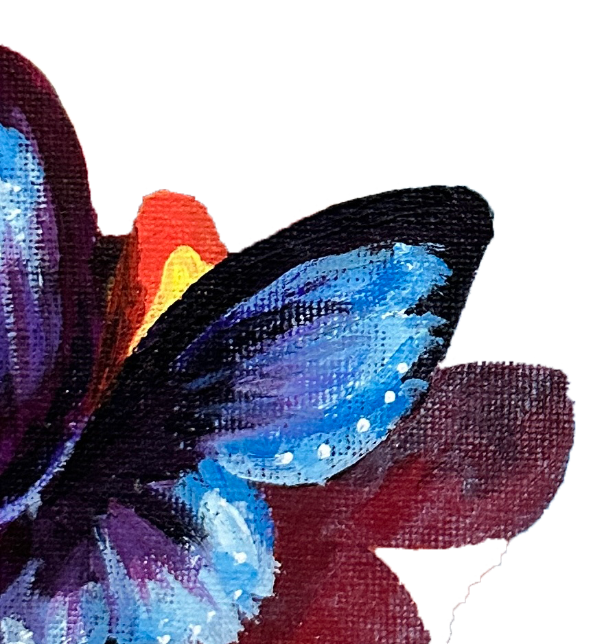
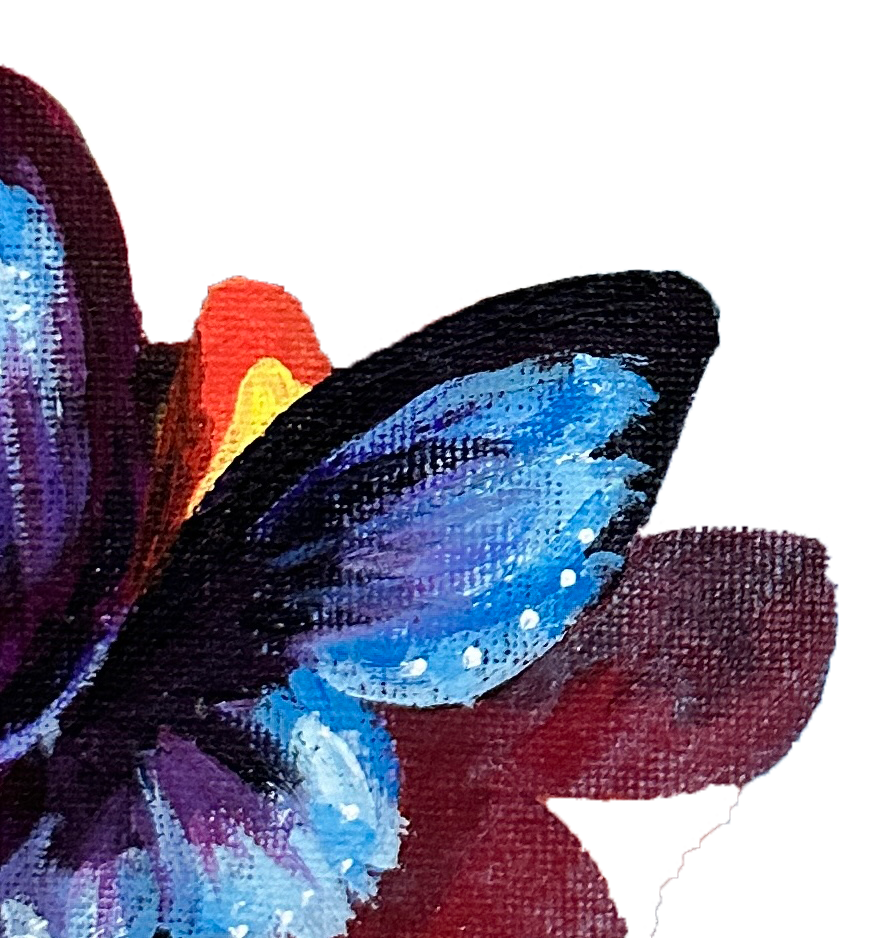

"The color of sky"
"The color of swimming pool"
"The color of winter"
"Ice"
"Ocean"
"Calm and serene"
"Sad"
"Deep"
"Desperate"
"Vast"
"A color that makes me feel calm"
"Cold"
"The color of autumn"
"The color that makes me feel warm"
"The color of the sunset on the wall"
"Fireplace "
"Tangerine"
"Energetic"
"Lively"
"The sun"
"Warmth OR brightness "
"Electrifying "
"My least favorite color"
"Warmth"


 
